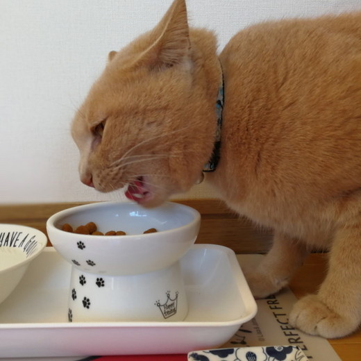
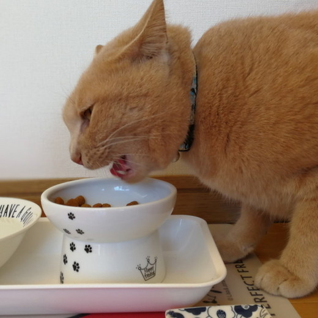
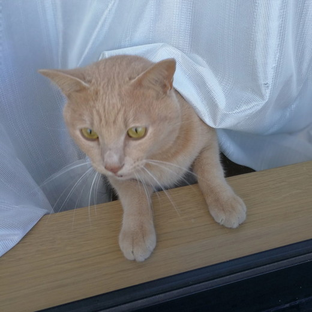
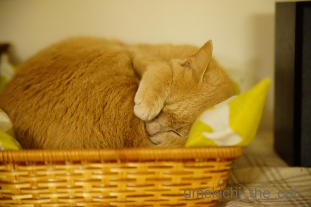
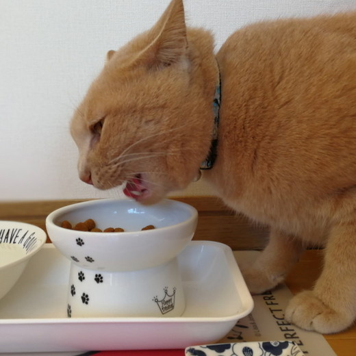
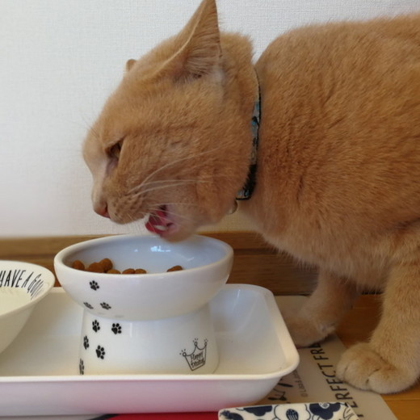
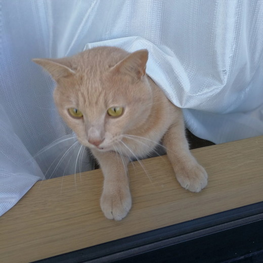
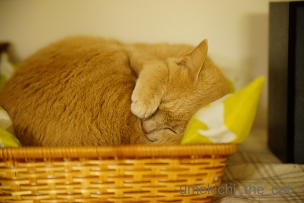

お留守番2日目と天橋立・伊根・舞鶴ー前半ー [梅吉]
朝ごはんを食べている時に送られて来たシッターさんからのメール。

お留守番1日目と同じ写真ではありませんw
「おお！今朝も元気にがぶりついているねー！！」と安堵しつつ報告メールを読みました。
以下シッターさんメールの抜粋です。
「今朝もお伺いした瞬間はスリ〜としてくれましたが、
次第に鼻息が荒くなり靴を脱いだら足の甲をガブリ。
トイレ掃除、ベランダの水やり、お湯が沸いたら湯たんぽの交換をパパっと終わらせて、
あとは梅吉くんと過ごしました。
と言ってもごはんを食べるか私に立ち向かって来るかでしたが^^;」
 

ごはんをもらうときはカメラ目線でスリスリ。ごはんをバクバク。

水やりをしにベランダに出たシッターさんの後追いもしてたみいです^^;
まずは元気で何より！と安心して２日目の旅行を楽しみました。
予定より早い19時ごろ帰宅すると玄関にはすでに梅吉の気配。
鍵を開けるとお出迎えしてくれましたーＯ(≧▽≦)Ｏ
先日のブログ記事にzombiekongさんから「帰って来たらすごく甘えたんじゃないですか?」と
コメントをいただいたのですが・・・
梅吉は甘えるというよりも私たちの後をついてとにかく走り回ります。
喜んでいるのは間違い無いんですが行動が意味不明。
おもちゃをくわえたかと思えば人をロイター板がわりにして高いところに飛び乗る。
お風呂の準備をしようとすればバスタブに（空です）にダイブ。
ベッドメイクしていると布団に飛び乗ってくる・・・・
北海道弁でこういう状態を「おだつ」って言うんですが、まさにおだってる見本。
（おだつ＝へんなテンションではしゃぎまくる、かな？）
先代猫は留守番させて帰ってくると２〜３時間姿を見せない子だったので
梅吉の反応は新鮮でした。面白いやっちゃな〜(≧ω≦｡)
私たちが起きている間中おだっている梅吉ですがベッドに入ると一緒に爆睡。
一人でお留守番しているときは退屈で寝てばかりかな？と思っていたのですが
横になってじっとしているもののあまり眠れていない様なんです。
きっとわずかな物音に聞き耳を立てたり玄関付近で音がしたら見に行ったり・・・
あくまで想像なのですけれど。。。

帰宅翌日はこんな感じで眠りこけてました=´ᆺ`=
人がいる物音、安心するんだね。
梅吉さん、留守番お疲れ様でした！
 ↑ガブッと一押し↑
↑ガブッと一押し↑
明け方、窓を打つ雨音が聞こえていたので「今日も雨だな・・・」と思っていたのですが
あら、以外にも晴れてる。
が、この日は晴れたり降ったり。
レンタカーで移動していたのですが傘を持たずに車から出る
雨に降られて車まで走るの繰り返しでした^^;
晴れ間を見て朝食前に天橋立の松林を散策です。（宿で傘を借りていきました）
お天気が読めないせいか誰もいません＾＾
いいねー！貸切だよ！！
湾内なので波が静かでゆったりしてます。釣り船を出している人もいました。
てくてく歩いて橋立明神にお参り。
文殊様に千年小言を言われ続けた龍が祀られているところです＾＾
そばにある真水の湧くところ。
こういうのがあるとついついのんじゃうんですが
「飲料水じゃ無いよ」って書いてありました^^;
口に含んだだけだから・・・・
その後何もありませんでしたけどw
この辺りで雨がバラバラと降って来たので退散。
お宿で朝食。焼き魚はエテカレイ。
（ワインの空き瓶はディスプレイですよ。朝から飲んでいませんから。）
宿の焼き魚って冷えているか保温機に入ってひかひかに乾いているものが多いと思いますが
これは焼き立てて暖かかったです。美味しかったー！！！
長くなったので次回に続きますね。

お留守番1日目と同じ写真ではありませんw
「おお！今朝も元気にがぶりついているねー！！」と安堵しつつ報告メールを読みました。
以下シッターさんメールの抜粋です。
「今朝もお伺いした瞬間はスリ〜としてくれましたが、
次第に鼻息が荒くなり靴を脱いだら足の甲をガブリ。
トイレ掃除、ベランダの水やり、お湯が沸いたら湯たんぽの交換をパパっと終わらせて、
あとは梅吉くんと過ごしました。
と言ってもごはんを食べるか私に立ち向かって来るかでしたが^^;」
 
ごはんをもらうときはカメラ目線でスリスリ。ごはんをバクバク。

水やりをしにベランダに出たシッターさんの後追いもしてたみいです^^;
まずは元気で何より！と安心して２日目の旅行を楽しみました。
予定より早い19時ごろ帰宅すると玄関にはすでに梅吉の気配。
鍵を開けるとお出迎えしてくれましたーＯ(≧▽≦)Ｏ
先日のブログ記事にzombiekongさんから「帰って来たらすごく甘えたんじゃないですか?」と
コメントをいただいたのですが・・・
梅吉は甘えるというよりも私たちの後をついてとにかく走り回ります。
喜んでいるのは間違い無いんですが行動が意味不明。
おもちゃをくわえたかと思えば人をロイター板がわりにして高いところに飛び乗る。
お風呂の準備をしようとすればバスタブに（空です）にダイブ。
ベッドメイクしていると布団に飛び乗ってくる・・・・
北海道弁でこういう状態を「おだつ」って言うんですが、まさにおだってる見本。
（おだつ＝へんなテンションではしゃぎまくる、かな？）
先代猫は留守番させて帰ってくると２〜３時間姿を見せない子だったので
梅吉の反応は新鮮でした。面白いやっちゃな〜(≧ω≦｡)
私たちが起きている間中おだっている梅吉ですがベッドに入ると一緒に爆睡。
一人でお留守番しているときは退屈で寝てばかりかな？と思っていたのですが
横になってじっとしているもののあまり眠れていない様なんです。
きっとわずかな物音に聞き耳を立てたり玄関付近で音がしたら見に行ったり・・・
あくまで想像なのですけれど。。。

帰宅翌日はこんな感じで眠りこけてました=´ᆺ`=
人がいる物音、安心するんだね。
梅吉さん、留守番お疲れ様でした！
明け方、窓を打つ雨音が聞こえていたので「今日も雨だな・・・」と思っていたのですが
あら、以外にも晴れてる。
が、この日は晴れたり降ったり。
レンタカーで移動していたのですが傘を持たずに車から出る
雨に降られて車まで走るの繰り返しでした^^;
晴れ間を見て朝食前に天橋立の松林を散策です。（宿で傘を借りていきました）
お天気が読めないせいか誰もいません＾＾
いいねー！貸切だよ！！
湾内なので波が静かでゆったりしてます。釣り船を出している人もいました。
てくてく歩いて橋立明神にお参り。
文殊様に千年小言を言われ続けた龍が祀られているところです＾＾
そばにある真水の湧くところ。
こういうのがあるとついついのんじゃうんですが
「飲料水じゃ無いよ」って書いてありました^^;
口に含んだだけだから・・・・
その後何もありませんでしたけどw
この辺りで雨がバラバラと降って来たので退散。
お宿で朝食。焼き魚はエテカレイ。
（ワインの空き瓶はディスプレイですよ。朝から飲んでいませんから。）
宿の焼き魚って冷えているか保温機に入ってひかひかに乾いているものが多いと思いますが
これは焼き立てて暖かかったです。美味しかったー！！！
長くなったので次回に続きますね。

カフェオレ色の梅吉

梅吉 2023年8月10日 永眠


梅吉と出会った譲渡会

犬猫の理由なき殺処分ゼロ
妄想広告
UMEKICHI 光

爆発的に早い！
時々攻撃的！
Thanks to Mr.Boss365
爆発的に早い！
時々攻撃的！
Thanks to Mr.Boss365

朝一の写真がスリッパにかぶりつく梅吉さん（笑
ご飯のタッパーにスリスリも可愛い(*^_^*)
こうして過ごしてくれると安心ですが
やはり寝不足だったのですね・・・
人の気配や物音に敏感ですもんね。
帰ってきたらテンションが上がったのですね！
それぞれの喜び方があり、それはそれで
愛おしいですね♪
by きぃ (2017-11-30 16:57)
帰って来たら嬉しくてたまらなくてはしゃいで安心して爆睡って、可愛くてたまらないですね~。何時に戻るか理解できないし気になって眠れなかったのですね。私は昔から近所の時は「すぐだよ」半日の時は「お留守番お願いね」など決まった言葉で言い聞かせて行きます。ちゃんと分かるようになりますよ。
by zombiekong (2017-11-30 17:08)
梅吉くん、ちぃさんが帰宅すると嬉しくて嬉しくて、
体全体ではしゃぎまわるなんて本当に可愛いですね～♡
シッターさんの後追いをするなんて、やはり寂しいのでしょうか。
でも、元気いっぱいにごはんを食べてくれると
安心ですね( ´∀｀ )
砂浜がとっても素敵ですね☆＾＾
梅吉君は、ホントに淡いカフェオレ色で綺麗だわ～(*^^)v
by マーヤ (2017-11-30 20:37)
これだけフレンドリーだと、シッターさんも嬉しいでしょうね。^^)
眠りこける梅吉さんが可愛いですね。子猫みたいです。
天橋立いいですね。また行ってみたいです。
by yes_hama (2017-11-30 21:16)
テンション上がりすぎて意味不明のパフォーマンス、梅吉さん、可愛すぎます(*^▽^*)
まだかな～まだかな～とお帰り待っててくれたんですね♪
カリカリのタッパーにアゴのせてのドヤ顔がまたカワイイったらありゃしません！
お宿の朝食美味しそう♪
温泉で朝風呂入ったらビール飲んじゃうことありますが、朝からワインはまだ経験ありません(^▽^;)
by ゆきち (2017-11-30 21:34)
２日目も梅吉さんのガブガブ写真で始まったんですねぇ( ^ω^ )
シッターさんの後追い、梅吉さんとしては「ちゃんとやってるか
見張ってるんだ！」ってところでしょうが、やっぱり寂しかったんですよねぇ(⌒-⌒; )
ちいさんたちが帰ってきておだっちゃったのも、嬉しすぎたせいですもんねぇ♪( ´▽｀)
あぁ、こんなに可愛くお迎えしてもらいたい〜（≧∇≦）
by ニッキー (2017-11-30 21:44)
帰宅後、ついて回って爆睡したところを考えると、
とても寂しかったのじゃないでしょうか。
ちぃさんが言われているように、
僅かな気配に眠れなかったのだと思うと、梅吉さんの健気さを感じました。
by kiki (2017-11-30 21:56)
朝からスリッパがぶがぶ、そしてタッパーにはスリスリ♪
フレンドリーですねえ＾＾
友達の家の猫シッターに行った時、こんなには接してくれなかったわぁ。
二度目のときの最後には膝に乗ってきてくれましたけど＾＾
帰ってきたらテンション高くなって大はしゃぎだったのですね～～。
色んな物音が気になって、いつ帰ってくるかと思って熟睡できなかったのかしら‥
切ないですね＾＾
by sana (2017-12-01 00:37)
ニャンコもそれぞれ甘え方が違いますね。
膝に乗る子、抱っこをせがむ子、ひたすら体を擦り付ける子、
みんな可愛いですね＾＾
by ぽちの輔 (2017-12-01 06:23)
梅吉さん普段の姿に戻りましたか(^^)
今日からロンドンにお出かけしてきます！
by ma2ma2 (2017-12-01 07:39)
梅吉さん、本当に安心したんですね。
寝顔が可愛いです(^_^)
by kou (2017-12-01 07:54)
みんなが帰ってきたら、謎のハイテンション！
可愛いすぎますー。
やっぱり寂しかったんよねー(^_^;)
おだつという表現、初めて知りましたが
なんかおもろいわぁ。
by よーちゃん (2017-12-01 08:10)
1枚目一瞬「あれ？更新まだされていない？」って思いましたよ(^.^)
梅吉くんお留守番お疲れさまでした～寝てるようで寝てなかったって…もう、いじらしくってウルウルです( ;∀;)家族でまったりして下さいね～
by palpal (2017-12-01 15:08)
元気にガブガブの梅吉くん。フードの入ったタッパーにもすりすりｗ
でも、やっぱりま～るくなって眠っている姿を見ると
寂しかったんだなって愛おしくなりますね。
家族の居る安心感。にゃんこやわんこはいつ帰ってくるのかわからないんだものね。
安心してゆっくりおやすみ。梅吉くん♪
降ったり止んだりの中の散策。
なんだかロマンティックかもｗ
by emi (2017-12-01 16:56)
おかえりなさーい♪ 梅しゃん、ママ帰ってきて良かったねー！
おもてなしガブしたり、カメラ目線したり、後追いしても、やっぱりママがいちばんなのでしょう♡
お食事の素晴らしいお宿、いいなあ～、これなら朝から本格的に飲める！
by Ginger (2017-12-01 17:55)
梅吉さんは嬉しくて、はしゃぎまくったんですね。
安心して寝ている梅吉さんを見て私も眠たくなりました(^^)
by riverwalk (2017-12-01 23:34)
ごはんを食べるか私に立ち向かって来るか･･･ 「立ち向かう」
立ち向かう梅吉さんが、私のアタマの中で、シン・ゴジラのようにふくらんでいます(^_^;
おふたりがお帰りで、テンションMAXですか〜 なんて純なお子かしら(^m^)
by のらん (2017-12-02 12:04)
梅吉くん、おだっちゃってたのね^^
ママとパパが帰ってきてくれて嬉しいんだなーって
伝わってきます。
人が居るという空間、猫たちにとっても幸せなんだろうなって思えると嬉しいですよね。こっちが物音たてても、爆睡してるもんね(笑)
by リュカ (2017-12-03 12:00)
きぃさん＞
スリッパにがぶりつく様子が「梅吉君は元気です！」と伝える
一番の方法だとシッターさんも思ったようですw
私たちも一安心できた朝の一枚でしたよ＾＾
留守番中の過ごし方も帰ったときのお迎え方法も
ニャンコ（わんこも）それぞれですね♡
zombiekongさん＞
出かけるときにちゃんと話しておくと良いのですね！
いつも「留守番お願いね」しか言っていないから
「すぐ」とか「遅くなるよ」と具体的に簡潔に、がポイントかな。
ちょっと始める時期が遅くなっちゃいましたが今からでも大丈夫かなぁ・・・
今後はちゃんと説明するようにします。
マーヤさん＞
はしゃぎまわって畳にふか〜い爪痕を残したり（泣）
レースのカーテンの穴を増やしたり（泣、泣）するのもこの時なんですが
「梅吉は元気だな」と安心するひと時でもあります＾＾
寂しい思いをさせちゃうのは可哀想なんですがご飯ちゃんと食べてるから！
と私も気持ちを強く持ってマス。。。
梅吉の毛色、実は自慢なのー(^_－)☆
綺麗って言ってくれてありがとう♡
yes_hamaさん＞
シッターさんをするくらいだから動物好きなはず！
手応えのある（ありすぎる）梅吉は
なかなか楽しい相手だと思っているに違いない！
と勝手に想像しています＾＾
天橋立、お天気の良さそうな時期に是非w
ゆきちさん＞
「まだかなー」と待っている姿が想像できるので
帰りは大体予定より早めに帰って来ることが多いです＾＾
お宿の朝食、レンタカーの日じゃなかったら絶対飲んでましたw
お酒好きな人の目の前で一人だけ飲んじゃうのは
流石に気がひけちゃいます^^;
ニッキーさん＞
シッターさんも狙ってガブガブ写真を送ってくれたような気がします(≧ω≦｡)
おだったお出迎え、畳のキズとレースのカーテンのボロボロが増えるのですが
「元気に走っているねー！」と笑って見ていられるようになりましたw
お出迎えも派手ですが「ごはんーーーーー！」（食べていても）
の催促もいつのも３倍くらいなる事を付け加えて置かなくっちゃ(^▽^;)
by ちぃ (2017-12-03 16:26)
kikiさん＞
健気に留守番を頑張ってくれました( ；∀；)
それを考えると出かけにくくもあるのですが
そうとも言っていられず・・・
なので帰った後しばらくは普段よりさらに甘々になっちゃいます(^_－)☆
sanaさん＞
お膝に！その方ががぶがぶ＆スリスリよりもすごいと思います！！
そして飼い主さんのジェラシー度も急上昇のような気がします(^▽^;)
梅吉もそのうちそんな画像が送られて来るかも。
寂しさがちょっとでも紛らわせることが出来るなら
それもそれで良いのですが・・・( ；∀；)
梅吉が我慢しているんだから私も我慢しなきゃ。。。
ぽちの輔さん＞
みんな違って本当に可愛いですよね＾＾
梅吉はひたすら体を擦り付けていた後
なぜかガブガブに変わって行きます^^;
このわけわかんない行動がまた可愛いのです♡
ma2ma2さん＞
ぐっすり寝た後はいつもの梅吉に＾＾
今頃はロンドンについているかな？
楽しい旅になると良いですね！
kouさん＞
安心して眠りこける姿には毎回ウルっときちゃいます・・・
そしてついつい甘くなる^^;
by ちぃ (2017-12-03 17:11)
よーちゃん＞
標準語では言い表せないような微妙なニュアンスを含んでいる方言って
面白いですよねー。
梅吉の謎のハイテンション「元気だねー！」って笑えるのですが
寂しかったんだね・・・と切なくもあります( ；∀；)
でも留守番にもある程度慣れてもらわないと。。。
palpalさん＞
がぶがぶ写真で揃えて来るなんてシッターさんもお茶目でしょー(^_－)☆
帰ってきた翌日はいつも以上に梅吉にかまったりして・・・
一番寂しかったのは私かも (^▽^;)
emiさん＞
留守番している時は梅吉なりに気を張っているのよね・・・
「留守番頼んだよ！」じゃなくて「たまにはゆっくりしてねー」
って言っておくと少しはリラックスして待っててくれるかな。。。
家の人が物音立てているからこそ安心してぐっすり眠れる・・・
イエネコならではの幸せだよね( ；∀；)
だれーもいない有名観光地の貸切は贅沢な時間でしたよ＾＾
でも交わされる会話は「お腹すいたー！ごはんなんだろ？」
とおよそロマンティックとはかけ離れたものでしたw
Gingerさん＞
帰ってきた翌日はそれなりに片付けもたまっているのに
梅吉可愛さでついつい添い寝などしてしまったり・・・ (^▽^;)
私も方が梅吉に依存しているかもw
レンタカーの日じゃなかったら確実にビールを頼んでいましたよ！
朝食のおかずも全てアテって感じでしたから＾＾
riverwalkさん＞
ニャンコの寝姿って人を誘いますよねー。
私もついつい添い寝など。。。
のらんさん＞
その妄想OKです！！！！
ガシーン、ガシーン、ギャワァァァァァァァ〜と
効果音も一緒にお願いいたしますm(_ _)m
梅吉、どんな時でも拗ねたりいじけたりしないまっすぐな子なんです。。。
リュカさん＞
「おだつ」以外にぴったりな言葉が見つからなくて・・・
はしゃぎまわるなんて言葉ではとても足りないwww
人が立てる物音があってこそ安心して熟睡できる、
この子は徹頭徹尾うちの子なんだー！って
愛しくなっちゃいます。
寝ているのにチューなんてして迷惑そうな顔されてますよ(≧ω≦｡)
by ちぃ (2017-12-03 20:51)